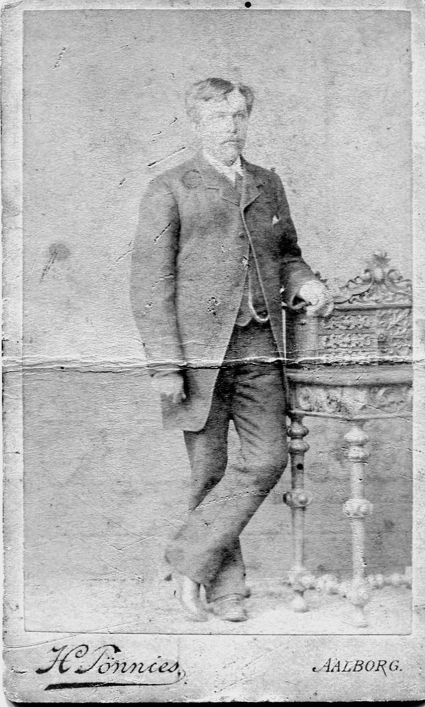

A family history
Two Names, Two Countries
The Life of Niels Christian Olesen Damborg, 1821–1899
Denmark, 1821–1866Niels Christian Olesen Damborg
Nebraska, 1866–1899Nelse C. Olson
Foster child · Dragoon · Himmerland farmhand · Nebraska homesteader

A family history of the Damborg line, from the parishes of Himmerland, Denmark to Washington County, Nebraska.
Compiled by Leo Pedersen and Ulrik Damborg · Fall 2026
Contents
Chapters
- 1An uncertain beginning1821–1835
- 2Farmhand and dragoon1835–1853
- 3Marriage and the farm at Terndrup1853–1865
- 4The name Damborg
- 5The break1865–1870
- 6The crossing1866
- 7Nelse C. Olson of Nebraska1866–1899
- 8The children and the legacy
Appendices
Notes are printed at the end of each chapter. Tap a note number in the text to read the note without leaving your place.